워드프로세서-(구-1급) (2010-09-12 기출문제)
1과목: 워드프로세싱 일반
1. 다음 중 문서의 특정 부분의 내용을 다른 부분으로 옮기고자(Move)할 때 사용하는 방법으로 옳은 것은?
- 범위선택 → 복사(Copy) → 붙일 부분으로 커서를 이동 → 붙이기(Paste)
- 범위선택 → 잘라내기(Cut) → 붙일 부분으로 커서를 이동 → 붙이기(Paste)
- 범위선택 → [Ctrl] 키를 누른 상태에서 선택된 부분을 드래그 하여 원하는 곳에 놓는다.
- 범위선택 → 저장하기(Save) → 붙일 부분으로 커서를 이동 → 끼워 넣기
(정답률: 67%)

2. 다음 중 문서를 작성하거나 편집할 경우 편리하게 이용할 수 있도록 제작된 이미지나 그래픽의 집합을 무엇이라고 하는가?
- 워드 랩(Word Wrap)
- 폴더(Folder)
- 클립아트(Clip Art)
- 옵션(Option)
(정답률: 81%)
3. 다음 중 기억장치에 대한 설명으로 옳은 것은?
- ROM은 전원이 공급되지 않으면 내용이 지워지는 휘발성 메모리이다.
- EPROM은 기록된 내용을 전기적인 방법으로 한 번만 지우고 다시 기록할 수 있다.
- SRAM은 재충전이 필요 없고, 속도가 빨라 캐시메모리로 사용된다.
- 플래시 메모리(Flash Memory)는 읽기와 쓰기가 가능하나 전원이 끊어지면 저장된 정보가 지워진다.
(정답률: 58%)
4. 치환 기능은 문서 내용의 특정한 단어를 찾아 원하는 단어로 바꿔주는 기능을 말한다. 다음 중 치환 기능으로 변환할 수 없는 것은?
- 수식
- 크기
- 속성
- 글꼴
(정답률: 57%)
5. 다음 중 전자출판의 특징으로 옳은 것은?
- 출판물의 제공은 가능하나 부가 정보 및 서비스는 불가능하다.
- 종이 출판물에 비해 출판물의 전체 내용을 비교·분석하기가 쉽다.
- 다수의 사용자가 동시에 같은 내용에 접근하여 이용할 수 없다.
- 출판 내용에 대한 추가 및 수정이 신속하고, 용이하다.
(정답률: 64%)
6. 다음 중 공문서 항목 구분 시 넷째 항목의 항목 구분으로 사용할 수 있는 기호는?
- 가, 나, 다, …
- 가), 나), 다), …
- ㉮, ㉯, ㉰, ㉰
- (가), (나), (다), …
(정답률: 72%)
7. 다음 중 공문서의 발송에 대하여 설명한 것으로 옳지 않은 것은?
- 시행문은 처리과에서 발송하되, 종이문서인 경우에는 이를 복사하여 발송한다.
- 전자 문서는 전자문서시스템 또는 업무관리시스템 상에서 발송하여야 한다.
- 업무의 성격, 기타 특별한 사정이 있는 경우에는 인편이나 우편으로 발송할 수 있으나, 전화나 전신으로는 발송할 수 없다.
- 문서는 정보통신망을 이용하여 발신함을 원칙으로 한다.
(정답률: 67%)
8. 다음 중 행정기관의 장이 소속공무원 또는 하급기관에 업무연락, 통보 등 일정한 사항을 알리기 위한 경우에 사용하는 문서를 무엇이라고 하는가?
- 회보
- 보고서
- 지시
- 일일명령
(정답률: 44%)
9. 다음 문장을 효과적으로 입력시키기 위한 방법이 아닌 것은?
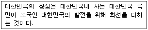
- ‘복사하기’ 사용
- ‘상용구(Glossary)’ 사용
- ‘매크로(Macro)’ 사용
- ‘보일러 플레이트’ 사용
(정답률: 68%)
10. 다음 중 전자출판(Electronic Publishing) 용어에 대한 설명으로 옳은 것은?
- 디더링(Dithering) : 기존의 이미지를 다른 형태로 새롭게 변형시키는 작업
- 오버프린트(Overprint) : 제한된 색상을 조합 또는 비율을 변화하여 새로운 색을 만드는 작업
- 스프레드(Spread) : 사진이나 그래픽 이미지를 문서의 바탕에 투명하게 인쇄하는 방법
- 커닝(Kerning) : 글자와 글자 사이의 간격을 미세하게 조정하는 작업
(정답률: 75%)
11. 다음 중 문서저장 시 파일명 및 확장자(Extension)를 지정하는 방법에 대한 설명으로 옳지 않은 것은?
- 문서 파일명은 문서의 성격 및 내용이 무엇인지를 쉽게 알 수 있도록 간단하게 지정하는 것이 좋다.
- 일반적으로 *.bak 파일은 문서가 변경되어 저장되는 경우 그 이전의 문서 내용을 저장하는 백업 파일이다.
- 문서 작성 프로그램에 따라 기본적으로 저장되는 확장자는 정해지므로 임의로 사용자가 다른 형식으로 바꾸어 저장할 수 없다.
- 특정 워드프로세서에서 작성한 문서 파일의 확장자를 다르게 바꾸더라도 다음에 그 워드프로세서에서 파일을 읽을 수 있다.
(정답률: 64%)
12. 다음 중 입력 장치에 대한 설명으로 옳지 않은 것은?
- CCD(Change Coupled Device)는 광학 문자 판독기(OCR)에서 사용되는 장치로 빛의 신호를 전기적 신호로 변환하는 장치이다.
- 자기 잉크 문자 판독기(MICR)는 자성을 가진 특수 잉크로 기록된 문자를 판독하는 장치이다.
- 빛을 이용하는 입력 장치에는 광학식 마우스, 스캐너, 바코드 판독기 등이 있다.
- 터치 패드(Touch Pad)는 노트북 컴퓨터에서 주로 사용되는 입력장치로 손가락의 접촉과 이동을 감지하여 화면의 커서를 움직이는 장치이다.
(정답률: 64%)
13. 다음 중 글꼴의 표현방식에 대하여 설명한 것으로 옳지 않은 것은?
- 비트맵(Bitmap) 글꼴은 점으로 글꼴을 표현하는 방식으로 확대하면 테두리가 거칠어지는 현상이 일어난다.
- 아웃라인(Outline) 글꼴은 문자의 외곽선 정보를 이용하여 문자를 표시한다.
- 트루타입(True Type) 방식의 글꼴은 Windows에서 기본적으로 사용되는 글꼴로 위지윅(WYSIWYG) 기능을 제공한다.
- 오픈타입(Open Type) 방식의 글꼴은 고도의 압축 기법을 통해 파일의 용량을 줄인 외곽선 형태의 글꼴로 주로 인쇄용 글꼴로 사용된다.
(정답률: 53%)
14. 이미 작성된 문서 전체에 대해서 한 줄 건너 매 줄의 내용을 다음과 같은 서식으로 바꾸고자 한다. 이러한 반복적인 작업을 수행하는데 가장 효율적인 기능은?
- 스타일(Style)
- 캡처(Capture)
- 문단 모양
- 바꾸기(Replace)
(정답률: 84%)
15. 다음 중 워드프로세서 용어에 대한 설명으로 옳지 않은 것은?
- 하드 카피(Hard Copy) : 화면에 보이는 내용을 그대로 프린터에 인쇄하는 것을 말한다.
- 프린터 버퍼(Print Buffer) : 인쇄할 내용을 임시 보관하는 장소이다.
- 용지 넘김(Form Feed) : 프린터에서 다음 페이지의 맨 처음 위치까지 종이를 밀어 올리는 것을 말한다.
- 프린터 드라이버(Printer Driver) : 워드프로세서의 산출된 출력 값을 특정 프린터 모델이 요구하는 형태로 번역해 주는 하드웨어를 말한다.
(정답률: 47%)
16. 다음 중 맞춤법 검사(Spelling Check)에 대한 설명으로 옳지 않은 것은?
- 작성된 문서에서 내장된 사전과 비교하여 맞춤법에 어긋난 단어를 찾아주는 기능이다.
- 맞춤법, 표준말, 띄어쓰기, 기호나 수식의 오류를 검사한다.
- 사전에 없는 단어는 사용자가 추가할 수 있다.
- 자주 틀리는 단어를 자동적으로 바꾸도록 지정할 수 있다.
(정답률: 55%)
17. 다음 중 워드프로세서의 인쇄 기능에 대한 설명으로 옳지 않은 것은?
- 프린터 등을 통해 작성한 문서를 인쇄하는 기능을 말한다.
- 미리보기 기능을 이용하여 문서의 전체 윤곽을 확인할 수 있다.
- 프린터의 해상도를 높게 설정하면 출력시간도 빠르고 선명하게 인쇄할 수 있다.
- 문서의 일부분만 인쇄할 수도 있고 인쇄 매수를 지정하여 동일한 문서를 여러 번 인쇄할 수 있다.
(정답률: 84%)
18. 다음은 전자출판의 어떤 기능을 설명한 것인가?
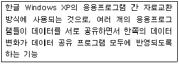
- OLE 기능
- Align 기능
- Margin 기능
- ODBC 기능
(정답률: 65%)
19. 다음 중 문서의 분량이 감소할 가능성이 있는 교정부호들로 올바르게 나열된 것은?
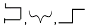
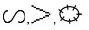
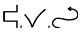
(정답률: 84%)
20. <보기1>의 문장이 <보기2>의 문장으로 수정되기 위해 필요한 교정부호들로만 올바르게 짝지어진 것은?
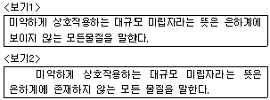
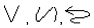
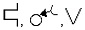
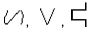
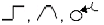
(정답률: 79%)
2과목: PC 운영 체제
21. 다음 중 한글 Windows XP의 [검색 도우미] 창에서 사용할 수 있는 폴더나 파일의 검색 조건에 관한 설명으로 옳지 않은 것은?
- 수정한 날짜의 기간을 조건으로 파일 및 폴더를 검색할 수 있다.
- 파일이나 폴더의 크기를 조건으로 검색할 수 있다.
- 파일 형식을 지정하여 검색할 수 있다.
- 설치된 하드웨어 이름을 조건으로 입력하여 해당 드라이버를 검색할 수 있다.
(정답률: 46%)
22. 다음 중 한글 Windows XP의 [시스템 도구]에 있는 [디스크 조각 모음]에 관한 설명으로 옳지 않은 것은?
- [디스크 조각 모음] 작업을 수행하려면 컴퓨터 관리자 계정이 필요하다.
- 해당 볼륨에 있는 응용프로그램의 실행을 종료해야만 해당 볼륨에 대한 [디스크 조각 모음] 프로그램을 실행할 수 있다.
- 하드디스크에 기록하고 지우는 과정에서 디스크 단편화 현상이 발생하는데 이것을 제거할 수 있다.
- 하드디스크의 입출력 속도를 향상시킬 수 있다.
(정답률: 46%)
23. 다음 중 한글 Windows XP에서 [시스템 등록 정보] 창에 관한 설명으로 옳지 않은 것은?
- [일반] 탭에서는 윈도우 시스템의 버전, 사용자 정보 그리고 CPU의 종류와 RAM 용량을 보여준다.
- [컴퓨터 이름] 탭에서는 컴퓨터 이름과 작업 그룹을 표시해 준다.
- [하드웨어] 탭에 있는 [장치 관리자]를 선택하면 하드웨어 장치 목록을 종류별 또는 연결별로 표시해 준다.
- [성능] 탭에서는 시스템 리소스, 파일 시스템 등의 성능 상태 정보를 보여주며 시스템이 최적의 성능을 수행할 수 있도록 디스크 정리를 실행할 수 있다.
(정답률: 45%)
24. 다음 중 한글 Windows XP의 [보안 센터] 창에서 설정할 수 있는 내용으로 옳지 않은 것은?
- Windows에서 컴퓨터의 중요한 최신 업데이트를 정기적으로 확인하여 자동으로 설치할 수 있다.
- 네트워크나 다른 컴퓨터에 액세스할 때 사용하는 여러 사용자 이름 및 암호를 저장된 사용자 이름 및 암호에 저장할 수 있다.
- 바이러스와 기타 보안 위험으로부터 컴퓨터를 보호할 수 있다.
- 권한이 없는 사용자가 네트워크나 인터넷을 통해 액세스하지 못하도록 막아 컴퓨터를 보호해 준다.
(정답률: 38%)
25. 다음 중 한글 Windows XP에서 [내 네트워크 환경] 창에 관한 설명으로 옳지 않은 것은?
- [작업 그룹 컴퓨터 보기]를 클릭하면 [로컬 영역 속성] 창이 표시된다.
- [홈 네트워크 또는 소규모 네트워크 설치]를 클릭하면 [네트워크 설정 마법사]가 수행된다.
- [네트워크 환경 추가]를 클릭하면 [네트워크 환경 추가 마법사]가 수행된다.
- [네트워크 연결 보기]를 클릭하면 [네트워크 연결] 창이 표시된다.
(정답률: 42%)
26. 다음 중 한글 Windows XP 운영체제의 기능에 대한 설명으로 옳지 않은 것은?
- 디지털 사진을 웹에 게시하거나 전자 메일로 보내거나 화면 보호기로 사용할 수 있다.
- 완전한 64비트의 데이터 처리 방식을 제공하여 데이터 처리를 보다 빠르게 할 수 있다.
- 선점형 멀티태스킹을 이용하여 시스템이 다운되는 현상 없이 안정적으로 작업할 수 있다.
- 원격 지원을 통해 도움을 요청하면 온라인상으로 문제 해결에 도움을 받을 수 있다.
(정답률: 49%)
27. 다음 중 한글 Windows XP에서 [메모장]에 관한 설명으로 옳지 않은 것은?
- 문서의 내용을 창 크기에 맞추어 텍스트 줄을 바꾸어 표시할 수 있다.
- 편집 중인 문서에 현재 시간과 날짜를 삽입하는 기능이 있다.
- 문서 내용의 선택된 영역에 글꼴 스타일, 색상, 크기를 변경할 수 있다.
- 출력할 문서에 머리글 또는 바닥글을 삽입할 수 있다.
(정답률: 55%)
28. 다음 중 한글 Windows XP에서 [휴지통]에 관한 설명으로 옳지 않은 것은?
- A: 드라이브나 네트워크 드라이브에서 삭제한 파일은 [휴지통]에서 복원할 수 없다.
- 파일을 선택하여 [휴지통]으로 드래그 앤 드롭하면 삭제된다.
- [휴지통]에 있는 여러 파일을 선택하여 동시에 복원할 수 있다.
- [휴지통]에 있는 실행 파일을 실행할 수 있다.
(정답률: 67%)
29. 다음 중 한글 Windows XP에서 [도움말 지원 센터] 창에 관한 설명으로 옳지 않은 것은?
- [시작] 메뉴에서 [도움말 및 지원 센터] 항목을 클릭하거나 [F1] 키를 누르면 [도움말 지원 센터] 창을 표시할 수 있다.
- 검색어 입력을 이용한 검색 기능이 있으며, 검색된 항목은 즐겨찾기에 추가할 수 있다.
- 색인에 의한 도움말 검색은 찾을 키워드의 입력 없이 기존에 제공된 키워드 목록 중의 하나를 더블클릭하여 도움말을 찾을 수 있다.
- 검색된 도움말의 내용을 추가하여 파일로 저장할 수 있으며, 인쇄도 가능하다.
(정답률: 53%)
30. 다음 중 한글 Windows XP의 [마우스 등록 정보] 창에서 설정할 수 있는 내용으로 옳지 않은 것은?
- 왼손잡이를 위해 마우스 왼쪽 버튼과 오른쪽 버튼의 기능을 설정할 수 있다.
- 상황에 따른 포인터의 모양을 사용자 임의로 설정할 수 있다.
- 포인터의 이동 속도와 자취 표시를 설정할 수 있다.
- 키보드 우측의 숫자 키패드로 마우스 포인터를 움직이도록 설정할 수 있다.
(정답률: 61%)
31. 다음 중 한글 Windows XP에서 파일의 이름을 바꾸기 위한 방법으로 옳지 않은 것은?
- 해당 파일의 아이콘을 선택한 후에 바로가기 메뉴에서 [이름 바꾸기]를 선택하면 파일 이름을 변경할 수 있다.
- 해당 파일의 아이콘을 선택하고, 파일 이름 부분을 다시 한 번 더 클릭하면 파일 이름을 변경할 수 있다.
- 해당 파일의 아이콘을 선택하고 [F2] 키를 누르면 파일 이름을 변경할 수 있다.
- [탐색기] 창에서 해당 파일을 선택한 후에 [편집] 메뉴의 [이름 바꾸기]를 선택하면 파일 이름을 변경할 수 있다.
(정답률: 54%)
32. 다음 중 한글 Windows XP의 네트워크 환경에서 프린터의 공유에 관한 설명으로 옳지 않은 것은?
- 네트워크 공유 프린터에 연결한 후에는 마치 내 컴퓨터에 연결되어 있는 것처럼 프린터를 사용할 수 있다.
- 프린터의 공유를 중지하려면 [프린터 및 팩스] 창에 있는 해당 프린터의 등록정보 창의 [공유] 탭에서 [이 프린터 공유 안 함]을 설정한다.
- 네트워크의 여러 클라이언트와 프린터를 공유하는 경우에는 프린터 이름을 8자 이하로 사용해야 하고 이름에 공백이나 특수 문자가 들어가지 않도록 한다.
- 네트워크에서 프린터의 공유를 설정하는 과정에서 공유할 프린터의 이름을 변경할 수 있다.
(정답률: 54%)
33. 다음 중 한글 Windows XP의 [제어판]에 있는 [프로그램 추가/제거]를 이용하여 수행할 수 있는 작업으로 옳은 것은?
- 인터넷을 통하여 새 Windows 기능과 장치 드라이버를 다운 받아 설치할 수 있다.
- [Windows 탐색기] 프로그램을 제거할 수 있다.
- 제거된 응용프로그램은 [휴지통]에 임시 저장할 수 있다.
- 운영체제를 다시 설치할 수 있다.
(정답률: 37%)
34. 다음 중 한글 Windows XP의 [Windows 탐색기] 창에 관한 설명으로 옳지 않은 것은?
- 폴더 영역과 파일 영역을 구분하는 세로 선을 마우스로 끌어놓기를 하면 각 영역의 크기를 조절할 수 있다.
- 폴더 영역에서 폴더를 선택한 후에 숫자 키패드의 [*]키를 누르면 선택된 폴더의 모든 하위 폴더가 표시된다.
- 폴더 영역에서 [+] 표시가 있는 폴더는 하위 폴더까지 표시된 상태를 의미한다.
- 키보드의 방향키[←]를 누르면 선택한 폴더의 하위 폴더가 보이면 닫고, 하위 폴더가 닫힌 상태이면 상위 폴더를 선택한다.
(정답률: 48%)
35. 다음 중 한글 Windows XP의 [작업 표시줄 및 시작 메뉴 속성] 창에서 할 수 있는 작업으로 옳지 않은 것은?
- 작업 표시줄의 위치나 크기를 변경하지 못하도록 작업 표시줄 잠금을 설정할 수 있다.
- 마우스 포인터가 작업 표시줄에서 벗어나면 작업 표시줄이 사라지는 작업 표시줄 자동 숨기기를 설정할 수 있다.
- 같은 종류의 작업 표시줄 단추를 그룹으로 표시할 수 있다.
- 작업 표시줄에 있는 시계와 알림 영역을 모두 삭제할 수 있다.
(정답률: 57%)
36. 다음 중 한글 Windows XP에서 사용하는 바로 가기 아이콘에 관한 설명으로 옳지 않은 것은?
- 파일이나 폴더, 프린터와 같은 항목에 대하여 바로 가기 아이콘을 만들 수 있다.
- 바로 가기 아이콘의 등록 정보 창에서 바로 가기 아이콘의 대상 설정을 변경할 수 있다.
- 바로 가기 아이콘을 다른 곳으로 이동 시키더라도, 원본 내용은 이동하지 않는다.
- 바로 가기 아이콘을 삭제하면 원본 항목도 함께 삭제가 된다.
(정답률: 71%)
37. 다음 중 한글 Windows XP에서 [연결 프로그램]에 대한 설명으로 옳지 않은 것은?
- 확장자가 다른 파일들은 각각 다른 연결 프로그램으로 지정되어야 한다.
- 파일을 실행했을 때 연결 프로그램 대화상자가 나타나면 현재 연결된 프로그램이 없다는 의미이다.
- 파일의 확장자에 의해 연결 프로그램이 결정된다.
- 파일에 연결된 프로그램은 사용자가 바꿀 수 있다.
(정답률: 48%)
38. 다음 중 한글 Windows XP에서 프린터의 스풀(SPOOL) 기능에 대한 설명으로 옳지 않은 것은?
- 문서의 빠른 출력을 위하여 문서 인쇄 작업이 CPU를 독점할 수 있도록 하는 기능이다.
- 프린터 아이콘의 등록 정보 창에서 스풀에 관한 세부 사항을 지정할 수 있다.
- 스풀 설정의 유무에 따라 인쇄 속도의 차이가 있을 수 있다.
- 저속의 입출력 장치를 중앙 처리 장치와 병행하여 작동시켜 효율성을 증가시킬 수 있다.
(정답률: 49%)
39. 다음 중 한글 Windows XP의 [그림판] 프로그램에 관한 설명으로 옳지 않은 것은?
- 스캔한 사진을 [그림판]에서 보거나 편집할 수 있다.
- 작성된 이미지를 인쇄할 수 있으며 바탕 화면의 배경으로 사용하거나 다른 문서에 붙여 넣을 수 있다.
- <Alt> 키를 누른 상태로 마우스를 끌어 수평선, 수직선 또는 45도 대각선을 정확하게 그릴 수 있다.
- jpg, gif, bmp 등의 파일 확장자를 갖는 그림 파일을 그림판에서 작업할 수 있다.
(정답률: 61%)
40. 다음 중 한글 Windows XP에서 네트워크 구성 요소에 대한 설명으로 옳지 않은 것은?
- 프로토콜은 서로 다른 컴퓨터 간에 정보 교환이 가능하도록 하는 통신 규약이다.
- 클라이언트는 네트워크의 다른 컴퓨터나 서버에 연결하여 파일이나 프린터 등의 공유 자원을 사용할 수 있도록 한 소프트웨어이다.
- 어댑터는 컴퓨터를 네트워크에서 물리적으로 연결하는 소프트웨어이다.
- 서비스는 내 컴퓨터에 설치된 파일, 프린터 등의 자원을 다른 컴퓨터에서 공유할 수 있도록 하는 소프트웨어이다.
(정답률: 46%)
3과목: 컴퓨터 및 정보활용
41. 다음 중 최근 많이 사용되고 있는 뉴 미디어에 대한 설명으로 옳지 않은 것은?
- CCTV(Closed Circuit Television)은 특정한 수신자에게만 서비스하는 것을 목적으로 하는 폐쇄 회로 시스템이다.
- 텔레텍스트(Teletext)는 일기 예보, 프로그램 안내, 교통 안내 등 방송국에서 제공하는 정보를 일방적으로 수신하는 형태이다.
- HDTV(High Definition Television)는 고선명 텔레비전으로, 주사선의 수가 NTSC방식의 약 2배이다.
- 비디오텍스(Videotex)는 단방향 시스템으로 텔레비전 전파의 지극히 짧은 간격을 이용하여 문자 정보를 전달하는 다중 방송이다.
(정답률: 44%)
42. 다음 중 사람이 물체를 판단하듯이 카메라를 통하여 입력된 사물의 형태를 디지털 신호로 변환하고 이미지를 분석하여 사물의 형태를 파악하는 기술을 의미하는 것은?
- 패턴 인식 시스템
- 음성 인식 시스템
- 자동화 시스템
- 비전 시스템
(정답률: 43%)
43. 다음은 운영체제의 목적과 관련된 용어들이다. 설명이 옳지 않은 것은?
- 일정한 시간동안 시스템이 처리할 수 있는 일의 양을 CPU 사용율이라 한다.
- 사용자가 컴퓨터에 일을 지시하고 나서 그 결과를 얻는데 까지 소요되는 시간을 응답 시간이라 한다.
- 컴퓨터를 사용하고자 할 때 신속하게 사용할 수 있는 정도를 사용 가능도라 한다.
- 주어진 문제를 정확하게 해결하고 작동하는 정도를 신뢰도라 한다.
(정답률: 39%)
44. 멀티미디어 PC에서 비디오 신호를 컴퓨터 모니터에 맞게 변환하여 모니터 화면에 표시해 주는 보드로서, 문서를 작성하면서 TV나 비디오를 볼 때 사용하는 보드는?
- TV 수신 보드
- 비디오 오버레이 보드(Video Overlay Board)
- MPEG 보드
- 비디오 캡처 보드(Video Capture Board)
(정답률: 56%)
45. 미국가안보국(NSA)에서 개발한 Clipper 칩이 내장되는 블록 알고리즘으로, 소프트웨어로 구현되는 것을 막고자 Fortezza Card에 칩 형태로 구현하였으며, 전화기와 같은 음성을 암호화하는데 주로 사용되는 암호와 알고리즘은?
- IDEA(International Data Encryption Standard)
- Skipjack
- DES(Data Encryption Standard)
- RS(Ron's Code 5)
(정답률: 33%)
46. 다음 중 중앙처리장치(CPU)에 대한 설명으로 옳지 않은 것은?
- 중앙처리장치는 레지스터, 제어 장치, 연산 장치로 구성되어 있다.
- 주기억장치에 저장되어 있던 데이터가 데이터 버스를 통해 CPU로 전달된다.
- 파이프라이닝은 프로세서가 이전 명령어를 마치고 차례로 다음 명령을 수행하는 기법이다.
- 클럭 주파수, 워드크기, 캐시메모리, 파이프라이닝, 병렬처리 등이 CPU 처리 속도에 영향을 미친다.
(정답률: 47%)
47. 다음 중 근거리 통신망(LAN)에 대한 설명으로 옳지 않은 것은?
- 수백 개의 서로 다른 유형의 컴퓨터를 포함하기도 한다.
- 상대적으로 먼 거리의 도시에 위치한 컴퓨터 몇 대만 연결하여 자원을 공유한다.
- 유선 케이블, 적외선 링크, 소형 무선 송수신기 등을 이용하여 통신한다.
- 컴퓨터와 이동단말기 등을 무선으로 연결하는 통신용 송수신기로 블루투스(Bluetooth)가 사용된다.
(정답률: 61%)
48. 다음 응용 소프트웨어 중에서 성격이 다른 소프트웨어는?
- WS_FTP
- WINRAR
- ALZIP
- WINZIP
(정답률: 55%)
49. 다음 중 폰노이만이 제시한 프로그램 내장 개념(Stored Program Concept)에 대한 설명으로 옳지 않은 것은?
- 모든 데이터와 명령들은 실행되기에 앞서 주기억장치에 저장되어야 한다.
- 주기억장치에 저장된 내용은 데이터의 형식과는 관계없이 주소를 이용해서 접근 또는 참조된다.
- 명령어 처리는 프로그램 계수기의 지시에 따라 한 번에 하나씩 순차적으로 이루어진다.
- 각 기계어 명령의 실행 단계마다 사용자의 개입을 필요로 한다.
(정답률: 42%)
50. 압축은 본래의 자료를 다른 형태의 축소된 코드로 변환하는 것이다. 다음 중 보기의 설명에 해당하는 것으로 옳은 것은?
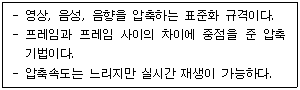
- MPEG
- JPEG
- DVI
- AVI
(정답률: 48%)
51. 다음 중 전송할 데이터의 양과 회선 사용시간이 많을 때 효율적이며, 중앙 컴퓨터와 터미널이 1:1로 연결되어 유지보수가 쉬운 연결방식은 무엇인가?
- 메인 프레임 방식
- 포인트 투 포인트 방식
- 클라이언트-서버 방식
- 등배 간 처리 방식
(정답률: 55%)
52. 다음 중 액세스 타임이 빠른 것부터 느린 것 순서로 옳게 나열한 것은?
- CPU 내부 레지스터-캐시메모리-주기억장치-HDD-FDD
- 캐시메모리-CPU 내부 레지스터-주기억장치-FDD-HDD
- 캐시메모리-CPU 내부 레지스터-주기억장치-HDD-FDD
- 주기억장치-캐시메모리-CPU 내부 레지스터-FDD-HDD
(정답률: 44%)
53. 다음 중 컴퓨터의 자료표현에 대한 설명으로 옳지 않은 것은?
- 수치 데이터의 표현은 정수는 부동소수점, 실수는 고정 소수점 방식으로 표현한다.
- 컴퓨터 내부에서는 주로 자료를 2진수로 표현한다.
- 인간과 컴퓨터의 정보교환을 위해 비트의 조합에 의해 문자를 표현하는 표준화된 코드가 필요하다.
- 부울 대수는 2진 변수와 논리동작을 취급하는 대수로 0과 1만의 값을 취한다.
(정답률: 40%)
54. 다음 중 통신회선을 통하여 송수신 되는 자료를 제어하고 감독하는 역할을 하는 장치는?
- 모뎀
- 통신 채널
- 통신 제어 장치
- 데이터 전송 장치
(정답률: 66%)
55. 다음 중 멀티미디어 저작도구에 대한 설명으로 옳지 않은 것은?
- 사용자의 입력에 따라 요소들의 제어흐름을 조정할 수 있는 기능이 있다.
- 미디어 파일들 간의 동기화 정보를 통하여 요소들을 결합하여 실행하는 기능이 있다.
- 저작도구 사용 시 멀티미디어 요소를 결합하기 위해 대부분 C 나 C++ 등의 프로그래밍 언어를 이용한다.
- 다양한 미디어 파일이나 미디어 장치를 유연하게 연결할 수 있다.
(정답률: 55%)
56. 다음 중 OECD에서 제시한 “프라이버시 보호 및 개인 정보의 국제적 유통에 대한 가이드라인” 8원칙에 해당하지 않는 것은?
- 재사용의 원칙
- 정확성의 원칙
- 공개의 원칙
- 수집 제한의 원칙
(정답률: 46%)
57. 다음 중 코드 조합을 다양하게 할 수 있는 조합 프로그램을 암호형 바이러스에 덧붙여 감염시켜서, 실행될 때마다 바이러스 코드 자체를 변경시켜 식별자로는 구분하기 어렵게 하는 바이러스는 무엇인가?
- 원시형 바이러스
- 은폐형 바이러스
- 다형성 바이러스
- 매크로 바이러스
(정답률: 48%)
58. 다음 보기에 설명하는 기법은 무엇인가?
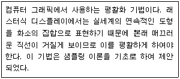
- 페인팅(Painting)
- 앤티앨리어싱(Anti-aliasing)
- 리터칭(Retouching)
- 랜더링(Rendering)
(정답률: 52%)
59. 다음 보기는 pc 사용 시 문제가 발생하여 응급처리를 실시한 내용이다. 어떤 문제가 발생하였을 때 취하는 행동인가?
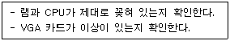
- 전원이 들어오지 않는다.
- 화면표시가 없고, ‘삑’하는 경고음이 들린다.
- CMOS를 임의로 설정했더니 부팅이 되지 않는다.
- ‘Disk boot failure...' 라는 메시지가 나타난다.
(정답률: 56%)
60. 클라이언트/서버 시스템의 모델은 일반적으로 2계층(2-tier) 모델과 3계층(3-tier) 모델로 분류된다. 다음 중 이에 대한 설명으로 옳지 않은 것은?
- 2계층 모델은 응용 논리의 주요 부분이 클라이언트에 주재하여 서버에게 데이터를 요청한다.
- 2계층 모델은 서버의 데이터베이스 구성이 변경되거나 새로운 데이터베이스를 추가할 경우 기존의 응용 프로그램을 재작성할 필요가 없다.
- 3계층 모델은 표현 논리를 클라이언트에 두고, 응용 논리를 중간에, 그리고 자료 논리를 서버에 두어 구성된다.
- 3계층 모델은 확장성이 높아 대형화된 조직의 업무처리에 적합하다.
(정답률: 54%)